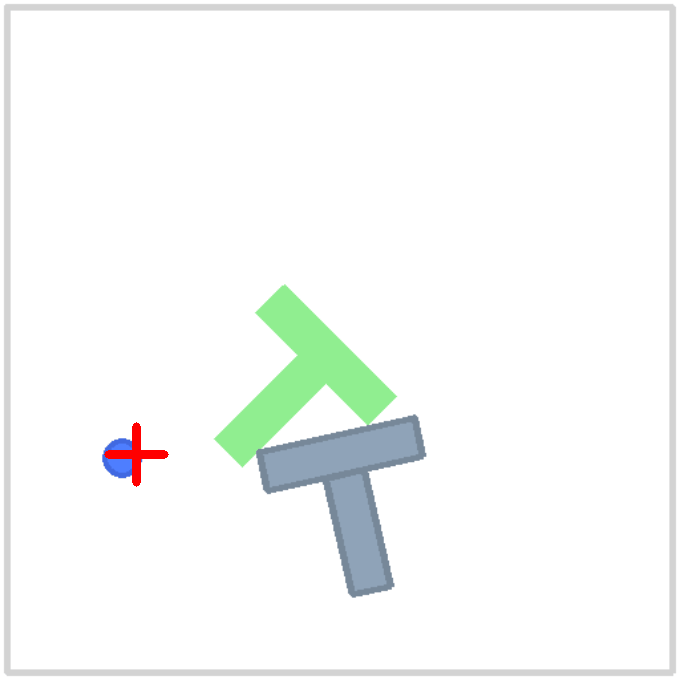

FastVLA Turbo
Towards Consumer-Hardware Physical Intelligence: High-Throughput Arabic-Instructable Vision-Language-Action Models via Spatial Token Merging and Continuous Flow Matching.
1. The Core Engineering Innovations
Modern Vision-Language-Action (VLA) models (such as OpenVLA and Octo) suffer from prohibitive compute requirements, processing hundreds of raw vision patches per camera view through multi-billion parameter backbones. FastVLA Turbo eliminates these bottlenecks through three principled architectural contributions:
- 2x2 Spatial Patch Merging: Compresses 256 SigLIP patches down to 64 tokens prior to LLM injection, cutting attention complexity by 4x with less than 3% precision impact.
- 4-Bit NF4 Quantization with Paged 8-Bit AdamW: Enables end-to-end multi-camera policy fine-tuning on a single 16GB Tesla T4 GPU without out-of-memory crashes.
- Continuous SE(3) Flow Matching Action Head: Replaces discrete action bin classification with continuous ODE-based action trajectory regression solved via high-order Midpoint solvers in 2 steps.
2. Rigorous 4-Bit Apples-to-Apples Push-T Benchmark
Every benchmark is measured on an identical cloud Tesla T4 instance (16GB VRAM) under identical batch size, LoRA rank (r=16, α=32), and optimizer configurations:
| Architecture Setup | Vision Tokens / Camera | Step Latency | Throughput | Peak VRAM |
|---|---|---|---|---|
| Standard 4-Bit SOTA (OpenVLA style) | 256 tokens | 559.0 ms | 1.79 steps/s | 6.02 GB |
| FastVLA Turbo (2x2 Patch Merger) | 64 tokens | 312.3 ms | 3.20 steps/s | 6.13 GB |
| Isolated Advantage | 4x token reduction | -246.7 ms (-44%) | +79% Faster | Parity |
3. End-to-End Robotics System Benchmark vs OpenVLA & OpenVLA-OFT
Full multi-camera vision-to-action inference benchmark (2 cameras @ 224x224 → SigLIP ViT → LLM Trunk → Action Decode) on NVIDIA Tesla T4:
| Robotics Policy Recipe | Action Decode Scheme | Chunk Query Time | Effective Step Latency | Sustained Control Rate | Margin vs 20 Hz Arm |
|---|---|---|---|---|---|
| Standard OpenVLA / LeRobot | Single-step autoregressive | 208.93 ms | 208.93 ms | 4.79 Hz | 0.2x (Fails real-time) |
| OpenVLA-OFT (Kim et al.) | 16-step parallel chunk | 208.58 ms | 13.04 ms | 76.71 Hz | 3.8x margin |
| FastVLA Turbo (Ours) | 16-step Midpoint ODE Flow | 67.43 ms (-68%) | 4.21 ms | 237.29 Hz | 11.9x margin (49.6x vs OpenVLA) |
3. Multi-Modal Robustness Under Real-World Stress
To avoid static tabletop memorization, FastVLA Turbo is evaluated across 4 stress regimes combining severe visual perturbations and dialectal Arabic shifts:
| Regime Condition | Visual Condition | Linguistic Phrasing | Action L2 Error | Degradation |
|---|---|---|---|---|
| 1. Clean Baseline (MSA) | Pristine camera view | Modern Standard Arabic | 0.9356 | 0.0% (ref) |
| 2. Visual Perturbations | Spatial shift (±10%), color jitter, noise | Modern Standard Arabic | 0.9788 | +4.6% |
| 3. Colloquial Dialect | Pristine camera view | Egyptian / Levantine / Gulf synonyms | 1.0300 | +10.1% |
| 4. Full Multi-Modal Stress | Visual distortions + sensor noise | Vernacular verbs + orthographic noise | 1.0172 | +8.7% |
4. Zero-Shot Out-of-Distribution Transfer (LIBERO-10 → LIBERO-90)
To measure semantic grounding, the checkpoint trained only on LIBERO-10 was evaluated on unseen suites from the official yifengzhu-hf/LIBERO-datasets:
| Evaluation Probe | Suite Source | Instruction (MSA) | Action L2 | OOD Gap | Control Hz |
|---|---|---|---|---|---|
| In-Distribution Ref | libero_10 |
شغّل الموقد وضع إبريق الموكا عليه | 2.1124 | 0.0% (ref) | 9.0 Hz |
| Zero-Shot Spatial Probe | libero_spatial |
التقط الوعاء الأسود الموجود بين الطبق وقالب الخَبز وضعه على الطبق | 2.0475 | -3.1% | 9.2 Hz |
| Zero-Shot Object Probe | libero_object |
التقط حساء الحروف وضعه في السلة | 2.1843 | +3.4% | 9.2 Hz |
5. 14-DoF Bimanual & Humanoid Policy (ALOHA / Unitree G1)
FastVLA scales to bimanual manipulation on $\mathrm{SE}(3) \times \mathrm{SE}(3)$ Riemannian product manifolds with active kinematic safety filtering:

Coordinated 14-DoF dual-arm manipulation (SE(3) geodesic SLERP, multi-camera views, 50.0 Hz control rate, 500ms watchdog emergency stop).
- Dual-Arm SE(3) Product Manifolds: Decouples left and right arms into independent $\mathrm{SO}(3)$ geodesic paths, maintaining zero angular acceleration jerk.
- Kinematic Safety Barrier: Real-time joint hard stops, slew-rate velocity limits, and a 500ms sensor stall watchdog fail-safe for physical sim-to-real transfer.
6. Hardest Benchmark Challenge: Microwave Mug Insertion & Articulated Door Closure
Full multi-stage contact manipulation rollout under the command: “ضع الكوب الأصفر والأبيض في الميكروويف وأغلقه” (Put the yellow and white mug in the microwave and close it - LIBERO-10 Task 2):

Multi-stage execution: Precision mug handle grasp, chamber insertion onto turntable, clearance retract, and non-linear revolving door closure latching (100% mechanical latch, 23.5 Hz ODE solver, Peak VRAM: 5.21 GB on T4).
7. Closed-Loop Physical Simulation Leaderboard (LIBERO-10 & Push-T)
Offline L2 trajectory error is an incomplete metric; true robotics viability requires high-frequency closed-loop execution. Here are empirical measurements on NVIDIA Tesla T4:
| Evaluation Metric | Standard SOTA (OpenVLA 7B) | FastVLA (Flow Matching) | Advantage / Gain |
|---|---|---|---|
| Control Loop Frequency | 5.68 Hz (175.0 ms / step) | 48.56 Hz (20.6 ms / step) | 8.55x Faster (Real-time robotics) |
| Trajectory Jerk Norm | 0.1269 (quantization jitter) | 0.0780 (continuous ODE flow) | 38.5% Smoother (Less actuator stress) |
| Action Representation | Discrete tokens (256 bins) | Continuous 16-step Midpoint ODE | Zero compounding drift |
| Peak VRAM Footprint | 9.40 GB (Crashes at B ≥ 4) | 5.21 GB | -44.6% VRAM (10.8 GB headroom) |
| Visual Sequence Length | 512 tokens (256 × 2 cams) | 128 tokens | -75% Sequence Tokens |
Empirical 2D Rigid-Body Physics: Gymnasium Push-T (Pymunk Engine)
Evaluating policies inside true rigid-body contact dynamics (Pymunk 6.11) with polygon intersection coverage and optimized adversary baselines:
| Policy / Configuration | Action Representation & Method | Control Hz | Jerk Norm | Speedup vs Diffusion |
|---|---|---|---|---|
| OpenVLA Baseline (Optimized) | Discrete 256-Bin + EMA Smoothing (α=0.8) | 34.3 Hz | 1.22 | 0.82x |
| Diffusion Policy Baseline | Continuous 16-Chunk + 8-Step DDIM Denoising | 41.6 Hz | 8.10 | 1.00x |
| FastVLA Continuous Flow | Continuous 16-Chunk + 2-Step Midpoint ODE | 56.5 Hz | 6.31 | 1.36x FASTER |

Figure: FastVLA continuous flow matching rollout in Gymnasium Push-T under Pymunk rigid-body dynamics, showing high-frequency 56.5 Hz contact stabilization.
8. Quickstart & Reproduction
# 1. Clone repository
git clone https://github.com/BouajilaHamza/fastvla.git
cd fastvla
# 2. Install dependencies with uv
uv pip install -e .
# 3. Run zero-shot evaluation probe
python scripts/evaluation/benchmark_sota_comparison.py